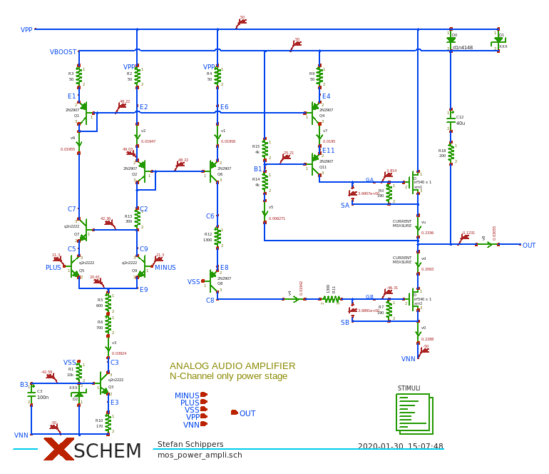
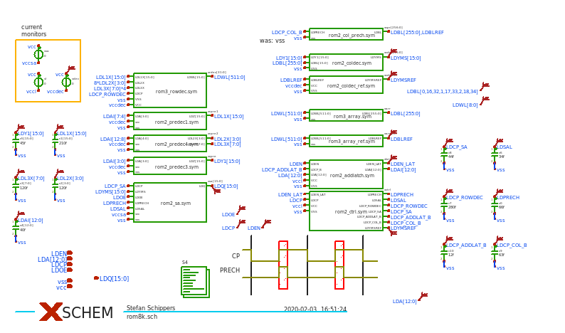

XSCHEM - CIRCUIT SCHEMATIC EDITOR
FOR VLSI - ASIC - PCB DESIGN
Submitted to F-si.org - Free Silicon Foundation Conference 2022
- Hierarchical representation of circuits.
- Generate circuit netlists for SPICE, Verilog, VHDL,
tEDAx (pcb-rnd interchange format)
- Components can be primitives, behavioral blocks, subcircuit blocks.
- True mixed mode circuit description: Analog, Behavioral, Transistor-level, Gate-level.
- Designed from ground-up to handle Very large designs as efficiently as possible, no scripting language is used for intensive computations.
- Core is written in C89 for max portability, GUI and scripting language implemented with Tcl-Tk.
- XSCHEM understands vector instances and bus notations like DATA[15:0,31:16].
- TCL API for forward / backward annotation to / from 3rd party EDA software.
- Works on most unix-likes.
- Native Windows port available.
- Xschem is the schematic editor used for the skywater PDK open source analog hardware design.


tEDAx (pcb-rnd interchange format)